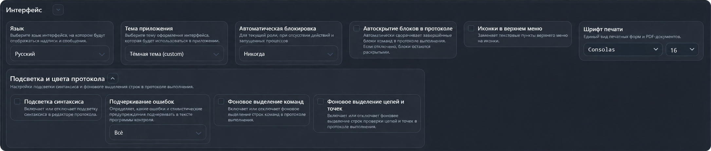

Раздел «Интерфейс»
Раздел настраивает язык, оформление приложения, автоматическую блокировку и отображение протокола. Откройте Настройки → Параметры → Интерфейс.

Общие параметры
- Язык — выбирает язык надписей и сообщений из доступных в приложении.
- Тема приложения — выбирает цветовое оформление интерфейса.
- Автоматическая блокировка — задаёт интервал бездействия для текущей роли: 1, 2, 5 или 10 минут. Значение «Никогда» отключает автоматическую блокировку. Во время выполнения процессов блокировка по бездействию не срабатывает.
- Автоскрытие блоков в протоколе — автоматически сворачивает завершённые блоки команд. При выключении блоки остаются раскрытыми. Параметр отображается только при включённых «Заголовках команд» в разделе «Протокол».
- Иконки в верхнем меню — заменяет текстовые пункты верхнего меню значками.
- Шрифт печати — задаёт гарнитуру и размер шрифта для печатных форм и PDF-документов. Гарнитура выбирается из установленных в системе шрифтов.
Подсветка и цвета протокола
Раскройте одноимённую группу стрелкой рядом с заголовком.
- Подсветка синтаксиса — включает цветовое выделение синтаксиса в редакторе протокола.
- Подчеркивание ошибок — определяет, какие диагностические сообщения подчёркивать в тексте программы контроля: все ошибки и стилистические предупреждения, только ошибки или ничего. Этот выбор настраивается отдельно от цветовой подсветки синтаксиса.
- Фоновое выделение команд — выделяет фоном строки команд в протоколе выполнения.
- Фоновое выделение цепей и точек — выделяет фоном строки проверяемых цепей и точек в протоколе выполнения.
Сохранение изменений
После изменения параметров появляются значки галочки и крестика. Нажмите галочку, чтобы сохранить настройки, или крестик, чтобы вернуть последние сохранённые значения. Язык и тема применяются при сохранении.